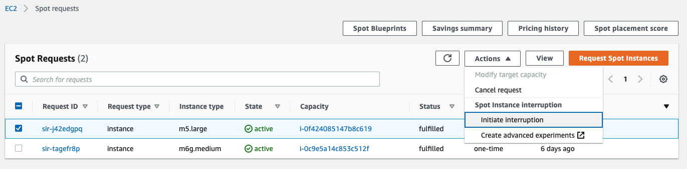
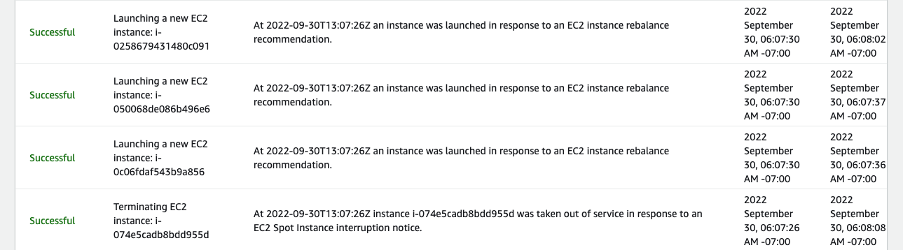

Bạn có thể khởi chạy Spot Instances với dung lượng EC2 dự phòng để được giảm giá mạnh, đổi lại việc trả lại chúng khi Amazon EC2 cần lấy lại dung lượng. Khi Amazon EC2 lấy lại Spot Instance, chúng tôi gọi sự kiện này là gián đoạn Spot Instance.
Khi sử dụng Spot Instances, bạn cần chuẩn bị sẵn sàng cho tình trạng gián đoạn Spot Instances. Một phương pháp phổ biến là kiểm tra khả năng phục hồi của ứng dụng bằng cách mô phỏng các gián đoạn Spot. Bạn có thể kích hoạt tính năng gián đoạn Spot bằng cách sử dụng AWS Fault Tiêm Simulator (FIS) bằng cách nhắm mục tiêu các Spot Instances riêng lẻ hoặc một tập hợp con của các instance được quản lý bởi các dịch vụ như ASG và EC2 Fleet.
To trigger a Spot Instance interruption from the Amazon EC2 console, you just need to navigate to the Spot Request section. Select a Spot Instance request and then choose Actions and then Initiate interruption. Behind the scenes, we then use AWS FIS to inject the interruption in your selected Spot Instance.
Để kích hoạt gián đoạn Spot Instance từ Amazon EC2 console, bạn chỉ cần điều hướng đến phần Spot Request. Chọn một yêu cầu Spot Instance, sau đó chọn Action rồi Initiate interruption. Phía sau, chúng tôi sử dụng AWS FIS để đưa gián đoạn vào Spot Instance đã chọn của bạn.

Hiện tại, AWS FIS có Định mức dịch vụ tối đa là 5 tài nguyên cho mỗi mục tiêu thử nghiệm trên mỗi tài khoản trên mỗi khu vực và Không thể định cấu hình Định mức dịch vụ. Điều này có nghĩa là ngay cả khi thử nghiệm của bạn nhắm mục tiêu nhiều hơn 5 EC2 Spot Instances, AWS FIS sẽ tự giới hạn ở mức 5 EC2 Spot Instances bị gián đoạn trên mỗi thử nghiệm. Bạn có thể vượt qua giới hạn này bằng cách chạy nhiều hơn 1 thử nghiệm cùng một lúc.
Để sử dụng AWS FIS, bạn chạy thử nghiệm trên tài nguyên AWS của mình để kiểm tra lý thuyết về cách ứng dụng hoặc hệ thống sẽ hoạt động trong điều kiện có lỗi. Để chạy thử nghiệm, trước tiên bạn phải tạo mẫu thử nghiệm. Mẫu thử nghiệm là bản thiết kế thử nghiệm của bạn. Nó chứa các hành động, mục tiêu và điều kiện dừng cho thử nghiệm.
Trong phần này, bạn 1- tạo vai trò IAM cấp cho AWS FIS quyền thực hiện thử nghiệm, 2- tạo mẫu thử nghiệm FIS và 3- và chạy thử nghiệm để kích hoạt gián đoạn Spot Instance.
Để sử dụng AWS FIS, bạn phải tạo IAM role cấp cho AWS FIS các quyền cần thiết để AWS FIS có thể thay mặt bạn chạy thử nghiệm. Bạn chỉ định role thử nghiệm này khi tạo mẫu thử nghiệm. Để biết thêm thông tin, hãy xem Tạo vai trò IAM cho thử nghiệm AWS FIS.
cat <<EoF > ./fis_role_trust_policy.json
{
"Version": "2012-10-17",
"Statement": [
{
"Sid": "AllowFISExperimentRoleAssumeRole",
"Effect": "Allow",
"Principal": {
"Service": [
"fis.amazonaws.com"
]
},
"Action": "sts:AssumeRole"
}
]
}
EoF
aws iam create-role --role-name my-fis-role --assume-role-policy-document file://fis_role_trust_policy.json
cat <<EoF > ./fis_role_permissions_policy.json
{
"Version": "2012-10-17",
"Statement": [
{
"Sid": "AllowFISExperimentRoleEC2Actions",
"Effect": "Allow",
"Action": [
"ec2:RebootInstances",
"ec2:StopInstances",
"ec2:StartInstances",
"ec2:TerminateInstances"
],
"Resource": "arn:aws:ec2:*:*:instance/*"
},
{
"Sid": "AllowFISExperimentRoleSpotInstanceActions",
"Effect": "Allow",
"Action": [
"ec2:SendSpotInstanceInterruptions"
],
"Resource": "arn:aws:ec2:*:*:instance/*"
}
]
}
EoF
aws iam put-role-policy --role-name my-fis-role --policy-name my-fis-policy --policy-document file://fis_role_permissions_policy.json
export FIS_ROLE_ARN=$(aws iam get-role --role-name my-fis-role | jq -r '.Role.Arn')
Ở bước này, bạn tạo một mẫu thử nghiệm gửi tính năng gián đoạn Spot tới Spot Instances được khởi chạy thông qua nhóm EC2 Auto Scaling hoặc nhóm EC2 trong các chương trước.
Mẫu thử nghiệm AWS FIS bao gồm:
Một hành động, đó là một hoạt động mà AWS FIS thực hiện trên tài nguyên AWS trong quá trình thử nghiệm. Trong trường hợp này, bạn sử dụng hành động được cấu hình sẵn aws:ec2:send-spot-instance-interruptions để gửi thông báo gián đoạn Spot Instance tới các Spot Instance hai phút trước khi làm gián đoạn chúng. Hành động này cũng gửi đề xuất cân bằng lại phiên bản EC2 dựa trên tham số intervalBeforeInterruption. Trong trường hợp này, bạn đặt Hành động được cấu hình sẵn aws:ec2:send-spot-instance-interruptions với thời lượngBeforeInterruption được đặt thành 2 phút. Bạn có thể thay đổi thành giá trị lớn hơn 2 phút để thể hiện đề xuất cân bằng lại EC2 Instance trước thông báo gián đoạn Spot Instance.
Mục tiêu là một hoặc nhiều tài nguyên AWS mà trên đó thử nghiệm AWS FIS thực hiện một hành động trong quá trình thử nghiệm. Trong trường hợp này, bạn đặt mục tiêu với aws:ec2:spot-instance làm loại tài nguyên và lọc Spot Instance được khởi chạy qua ASG bằng cách sử dụng các Thẻ tài nguyên được đặt thành “aws:autoscaling:groupName”: “EC2SpotWorkshopASG”.
Điều kiện dừng là cơ chế của AWS FIS để dừng thử nghiệm nếu thử nghiệm đạt đến ngưỡng mà bạn xác định là cảnh báo của Amazon CloudWatch. Trong trường hợp này, thử nghiệm chạy mà không có điều kiện dừng.
cat <<EoF > ./spot_experiment.json
{
"description": "Test Spot Instance interruptions",
"targets": {
"SpotInstancesInASG": {
"resourceType": "aws:ec2:spot-instance",
"resourceTags": {
"aws:autoscaling:groupName": "EC2SpotWorkshopASG"
},
"filters": [
{
"path": "State.Name",
"values": [
"running"
]
}
],
"selectionMode": "PERCENT(50)"
}
},
"actions": {
"interruptSpotInstance": {
"actionId": "aws:ec2:send-spot-instance-interruptions",
"parameters": {
"durationBeforeInterruption": "PT2M"
},
"targets": {
"SpotInstances": "SpotInstancesInASG"
}
}
},
"stopConditions": [
{
"source": "none"
}
],
"roleArn": "${FIS_ROLE_ARN}",
"tags": {}
}
EoF
export FIS_TEMPLATE_ID=$(aws fis create-experiment-template --cli-input-json file://spot_experiment.json | jq -r '.experimentTemplate.id')
Để chạy thử nghiệm, bạn sử dụng lệnh bắt đầu thử nghiệm để chạy mẫu đã tạo trước đó. Bạn có thể chạy thử nghiệm nhiều lần để xác thực kết quả chạy ứng dụng của bạn trên EC2 Spot.
aws fis start-experiment --experiment-template-id $FIS_TEMPLATE_ID
Theo kết quả của thử nghiệm này, bạn thấy rằng 50% Spot Instance do nhóm Auto Scaling khởi chạy nhận được tín hiệu Đề xuất tái cân bằng. Lưu ý rằng con số này nhỏ hơn Hạn ngạch dịch vụ là 5, là số lượng EC2 Spot Instance tối đa có thể bị gián đoạn bởi một thử nghiệm. Khi các hành động trong thử nghiệm này hoàn tất:
Thử nghiệm có thể thất bại nếu bạn không có bất kỳ Spot Instance nào đang chạy trong nhóm EC2 Auto Scaling hoặc Nhóm EC2 của mình. Nếu bạn gặp lỗi khiến thử nghiệm không thành công, hãy mở rộng quy mô nhóm EC2 Auto Scaling hoặc EC2 Fleet để cung cấp các EC2 Spot Instance.
Thiết lập nhóm Tự động thay đổi quy mô trong ví dụ đã bật Cân bằng lại công suất và do đó, nhóm Tự động thay đổi quy mô sẽ bắt đầu khởi chạy các EC2 Spot Instance thay thế khi các Spot Instance nhận được tín hiệu gián đoạn. Bạn có thể xem những sự kiện này trong ASG.

Với những thử nghiệm này, bạn có thể xác thực khả năng phục hồi của khối lượng công việc của mình trước tình trạng gián đoạn Spot và tùy ý cải thiện khả năng phục hồi của khối lượng công việc bằng cách triển khai các tác vụ điểm kiểm tra hoặc dọn dẹp.